Table of Contents
- 1. O programu
- 2. Spuštění programu
- 3. Použití programu
- 4. Obsah vygenerované dokumentace
- 5. Kódy transakcí
- 6. Klávesové zkratky
Table of Contents
Generátor dokumentace pro systém SAP umožňuje vytvářet externí dokumentaci pro vybrané objekty jazyka ABAP. Dokumentace je sestavována z metadat jednotlivých objektů a z dokumentačních komentářů obsažených v kódu objektů. Pro každý objekt program vygeneruje dokumentaci ve formátu .docx. Nadále program umožňuje exportovat obsah tabulky do formátu .xlsx. Program také umožňuje generovat dokumentaci pro objekty obsažené v Paketu nebo Transportním požadavku.
Table of Contents
Pro spuštění programu je potřeba mít přístup do systému SAP. Doporučeným klientem je SAP Logon. Program je typu report. Ve standardním SAP Logonu jej lze spustit pomocí dvou základním nástrojů:
ABAP Editor
Object Navigator
V ABAP Editoru zadejte název programu ZDOCU_GEN.
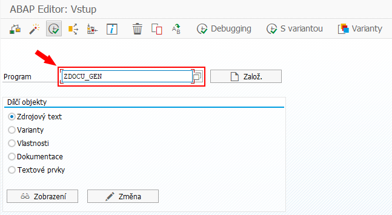
Stiskněte tlačítko Provedení pro provedení reportu.
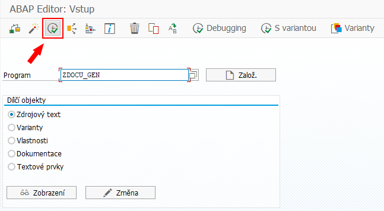
V Object Navigatoru vyberte paket ZDOCU.
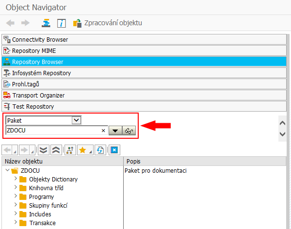
V adresáři Programy vyberte program ZDOCU_GEN.
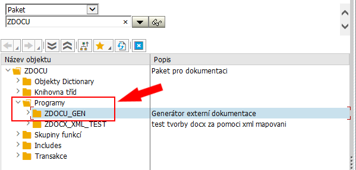
Tento program spustíte jedním z následujících dvou způsobů:
Klikněte pravým tlačítkem myši na program ZDOCU_GEN a vyberte Provedení → Přímo.
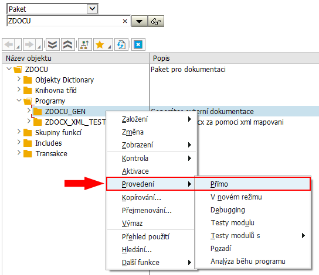
Dvakrát klikněte levým tlačítkem myši na programu Z_DOCU_GEN. Tím se spustí ABAP Editor a zobrazí se zdrojový kód programu. Následně stiskněte tlačítko Přímo pro provedení reportu.
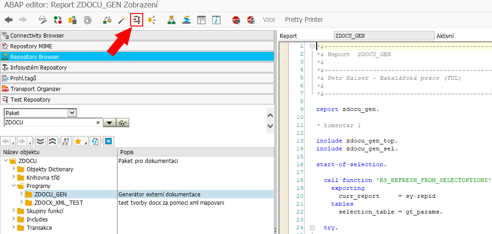
Table of Contents
Pro správnou funkčnost programu je potřeba vybrat objekty, pro které chcete generovat dokumentaci a vybrat výsledný adresář.
Pro generování dokumentace k paketu označte zaškrtávací pole vedle možnosti Objekt.
Do prvního pole formuláře vyplňte typ objektu.
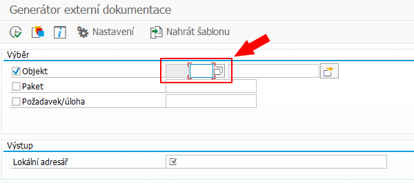
Pro zobrazení všech podporovaných typů objektů klikněte na tlačítko napravo od tohoto formuláře. Pro vybrání určitého objektu klikněte dvakrát levým tlačítkem myši na na řádek v tabulce s požadovaným objektem.
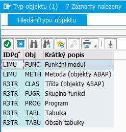
Po vyplnění typu objektu vyplňte do druhého formuláře název objektu. Pokud objekt vybraného typu s vybraným názvem ve vašem SAP systému existuje, tak pro něj program vygeneruje dokumentaci.
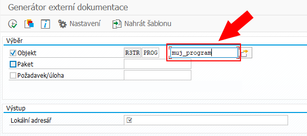
Pro výběr více objektů klikněte na tlačítko Vícenásobný výběr.
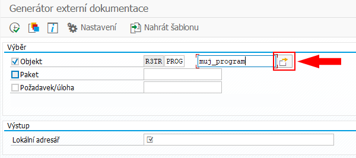
Zobrazí se tabulka. Do řádků této tabulky vkládejte názvy dalších objektů. Vkládané objekty musí být stejného typu, vámi vybraného v kapitole Výběr typu objektu.
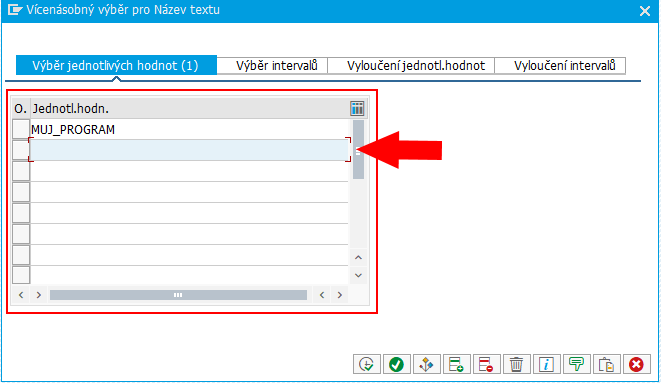
Pro potvrzení změn stiskněte tlačítko Kontrola zadání.
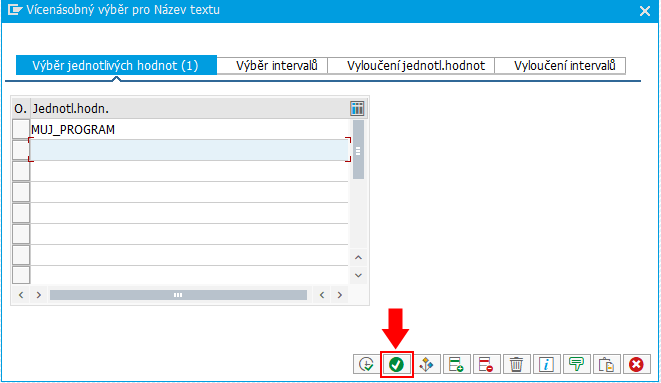
Pro generování dokumentace k paketu označte zaškrtávací pole vedle možnosti Paket a do pole formuláře vyplňte název požadovaného paketu. Pokud paket se zadaným názvem ve vašem SAP systému existuje, tak v něm po spuštění program identifikuje veškeré podporované objekty pro každý vygeneruje dokumentaci.
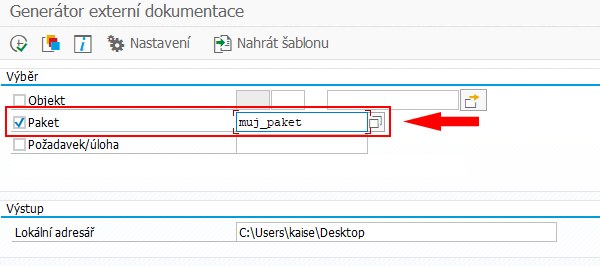
Pro generování dokumentace k transportnímu požadavku označte zaškrtávací pole vedle možnosti Požadavek/úloha a do pole formuláře vyplňte název požadovaného transportního požadavku. Pokud transportní požadavek se zadaným názvem ve vašem SAP systému existuje, tak v něm po spuštění program identifikuje veškeré podporované objekty pro každý vygeneruje dokumentaci.
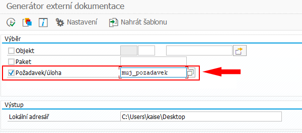
Do pole Lokální adresář zadejte požadované umístění vygenerované dokumentace. Pro výběr výsledného umístění pomocí průzkumníka souborů stiskněte tlačítko na pravé straně pole. V připadě nevyplnění pole bude dokumentace vygenerována do implicitního adresáře SAP GUI (standardně Dokumenty/SAP/SAPGUI).
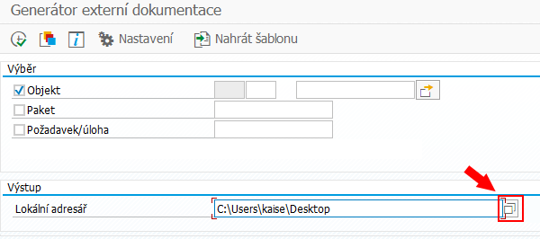
Proces generování dokumentace spustíte stisknutím tlačítka Provedení.
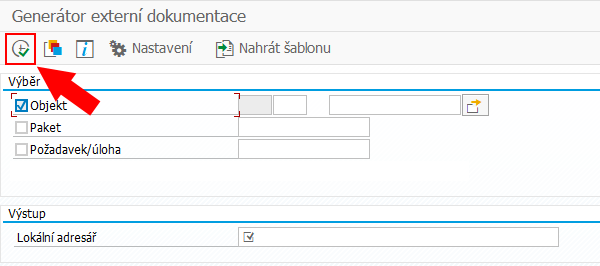
V průběhu generování může docházet k zobrazování dialogových oken, kdy vás program žádá o povolení k vytvoření souboru na disku. Toto dialogové okno odsouhlaste stisknutím tlačítka Povolení. V případě, že nechcete, aby se vám dialogové okno zobrazilo i příště, tak zaškrtněte možnost Uchování mého rozhodnutí.
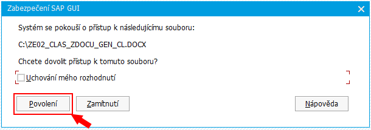
Každá šablona se skládá ze dvou částí:
šablonový soubor
název šablony
Pro nahrání šablonového souboru stiskněte tlačítko Nahrát šablonu. Tím se otevře okno průzkumníka souborů a v něm vyberte požadovaný šablonový soubor.
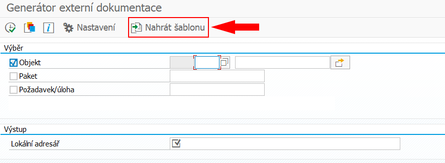
V průběhu nahrávání souboru může dojík k zobrazování dialogového oken, kdy vás program žádá o povolení k přístupu k souboru. Toto dialogové okno odsouhlaste stisknutím tlačítka Povolení. V případě, že nechcete, aby se vám dialogové okno zobrazilo i příště, tak zaškrtněte možnost Uchování mého rozhodnutí.
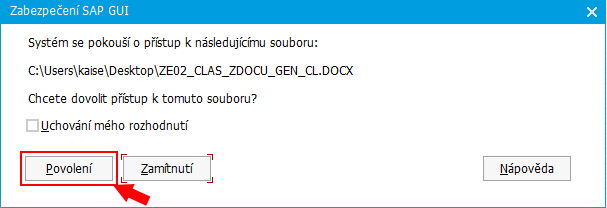
Tímto způsobem dojde k nahrání šablonového souboru do MIME repozitáře (/SAP/PUBLIC/Docu_templates).
Po nahrání šablonového souboru do MIME repozitáře je potřeba vytvořit novou šablonu v tabulce šablon. Pro úpravu tabulky s šablonami klikněte na tlačítko Nastavení.

V dialogové struktuře vyberte tabulku Šablony.
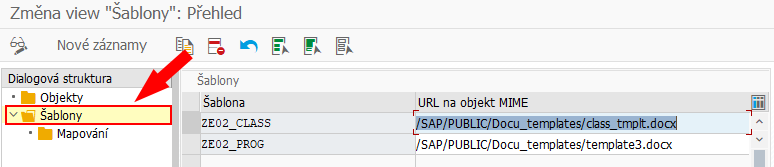
Pro přidání šablony do tabulky s šablonami klikněte na tlačítko Nové záznamy.

Tím dojde k zobrazení okna pro přidávání záznamů do tabulky. Do sloupce Šablona vyplňte název nové šablony. Do sloupce URL na objekt MIME vyplňte cestu k souboru v MIME repozitáři. Standardní cesta je /SAP/PUBLIC/Docu_templates/<nazev_sablonoveho_souboru>.
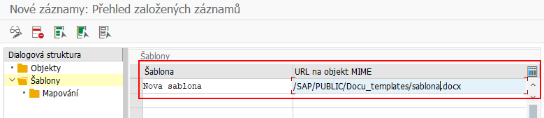
Následně provedené změny uložte kniknutím na tlačítko Uložení.
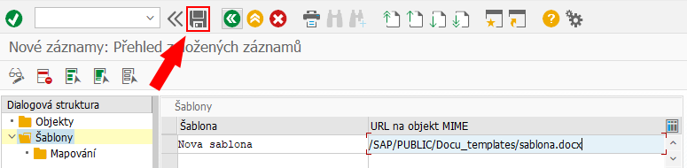
Pro výběr šablony pro určitý objekt klikněte na tlačítko Nastavení.
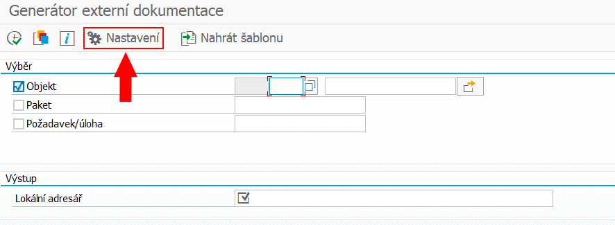
V dialogové struktuře vyberte tabulku Objekty.
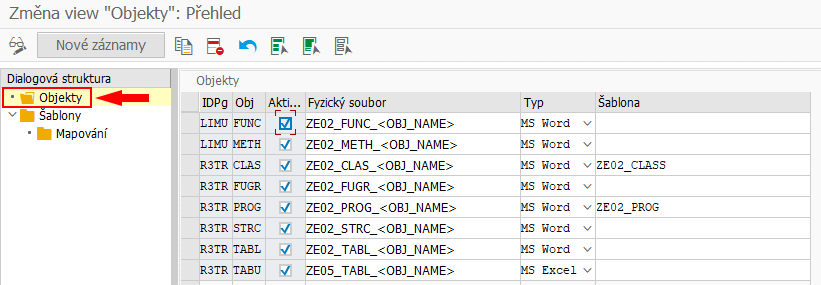
Pro změnu šablony vyberte v tabulce v řádku s daným objektem sloupec Šablona a do tohoto pole vyplňte název nové šablony.
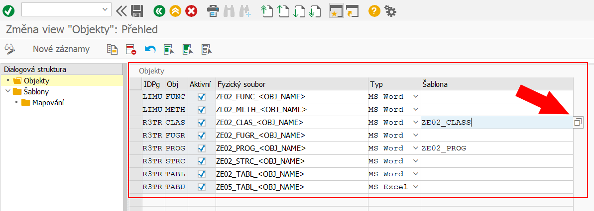
Pro zobrazení všech dostupných šablon klikněte na tlačítko na pravé straně pole. Zde vyberte požadovanou šablonu.
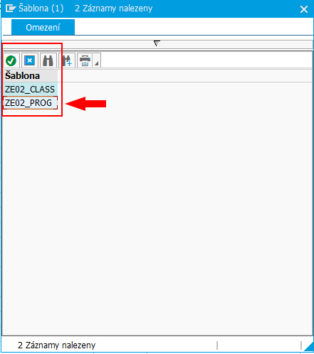
Pro uložení provedených změn stiskněte tlačítko Uložení.

Program umožňuje uložení aktuálního stavu v podobě pojmenované varianty. Tuto variantu lze následně vyvolat.
Pro uložení aktuálního stavu programu stiskněte tlačítko Uložit jako variantu.
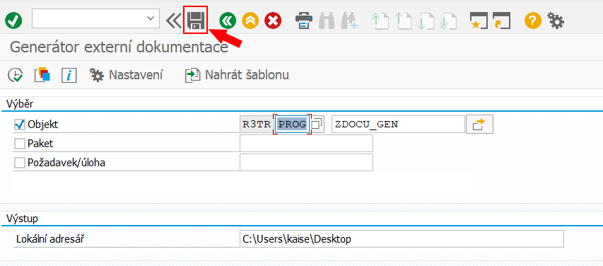
Zobrazí se okno pro nastavení atributů varianty. Zde vyplňte pole Náz. varianty a Význam. Následně variantu uložte stiskem tlačítka Uložení.
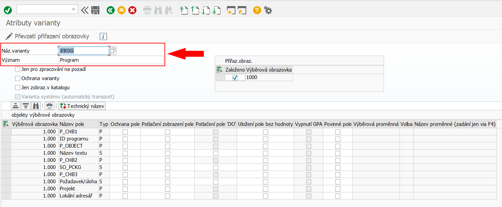

Pro jednotlivé objekty jazyka ABAP se liší obsah vygenerované dokumentace. TODO